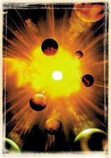

|
 Kuran-ý Kerim'de evrenin ortaya çýkýþý þöyle açýklanýr: “O gökleri ve yeri yoktan var edendir...„ (En'am Suresi, 101) Kuran'da verilen bu bilgi, çaðdaþ bilimin bulgularýyla tam bir uyum içindedir. Bugün astrofiziðin ulaþtýðý kesin sonuç, tüm evrenin madde ve zaman boyutlarýyla birlikte, bir sýfýr anýnda, büyük bir patlamayla var olduðudur. "Büyük Patlama", orijinal adýyla "Big Bang" teorisi, tüm evrenin yaklaþýk 15 milyar yýl önce tek bir noktanýn patlamasýyla yokluktan meydana geldiðini kanýtlamýþtýr. Büyük Patlama teorisi bugün evrenin varoluþu ve baþlangýcý konusunda bütün bilim çevreleri tarafýndan ortak kabul gören yegane bilimsel açýklamadýr. Big
Bang'den önce madde diye bir þey yoktur. Maddenin, enerjinin, hatta zamanýn
dahi bulunmadýðý, tamamen metafizik olarak tanýmlanabilecek bir yokluk
ortamýnda madde, enerji ve zaman yaratýlmýþtýr. Modern fiziðin ortaya koyduðu
bu büyük gerçek, Kuran'da bize 1400 yýl önceden haber verilmektedir.
|